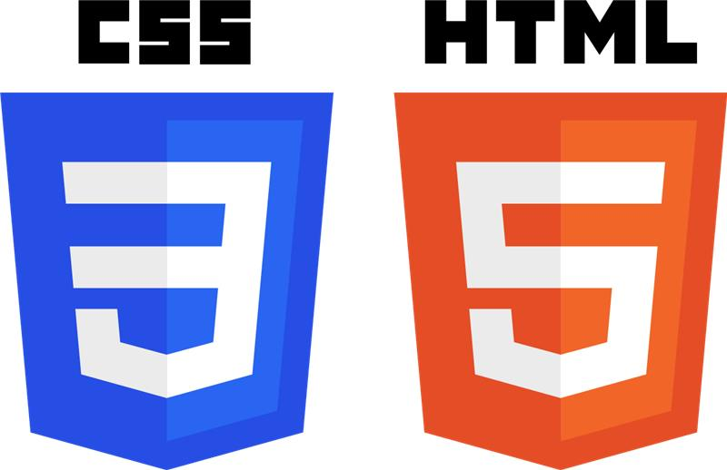

Welcome to the World of HTML & CSS!

Introduction
- What is HTML?
- Hypertext Markup Language or HTML is a coding language used in front end web development. It is the information and brains of the webpage.
- What is CSS?
- Cascading Style Sheets or CSS is another coding language that is also used in front end web development to stylize the webpage. It is the design and heart of the webpage.
HTML Basics
- What is a tag?
- Tags are keywords that create structure and meaning in the code that allows the browsers to display and perform as you wish.
- What is an element?
- HTML elements are objects that contain the tags and content of an HTML page. It tells the browser how the page is structured (head, body, main, etc)
- What is an attribute?
- Adding more definition to a tag, an attribute allows specific tags rather than all of the tags in a file. This will help with CSS and organization in the code.
CSS Basics
- What is a selector?
- Selectors are the rules that match targeted HTML elements. It allows the developer to target certain parts of the page for styling.
- What is a class?
- A class is a type of CSS selector that allows the developer to apply style choices to multiple areas.
- What is an id?
- The ID attribute is used when developers are trying to apply a style to a specific item, and only that item.